We would like to thank you for purchasing this script! We are very pleased you have chosen our script for your project, you will not be disappointed! Before you get started, please be sure to always check out these documentation files. We outline all kinds of good information, and provide you with all the details you need to use.If you have any questions that are beyond the scope of this help file, please feel free to contact us on codeglamour1@gmail.com
To installing CI Material Admin Integration with Codeigniter, Your web server must be running PHP 5.6 or higher, and Mysql 5 or higher. Below are a list of items you should ensure your host can comply with.
*In most hosting accounts these extensions are enabled by default. But you should check with your hosting provider.
CI Material Admin is Startup Codeigniter Admin Panel for starting a new project with Codeigniter Framework. It is developed for custom codeigniter projects. It’s cover most common features that needed for nowadays project. It will make your development task more easier then before. We are working hard to create many premium features on this project
The main objective is to speed up web development effort by providing configurable and ready modules. Configurations can be made easily using the Control Panel, or programmatically. Use CI Material Admin Panel’ to create your own web application with the following benefits:
You need to have previously setup database from the cPanel.
Here is a good tutorial how to setup MySQL database in cPanel if you are not familiar with this.
Make sure you have checked All privileged when adding the user to database.
Note: You dont need to add your base url, System will takes automatically. In some case you want to add please follow the lines below.
Go to application/config/config.php and setup $config['base_url'] where CI Material Admin will be installed.You need to add your base url to this line:
$config['base_url'] = '';
Ex. If you are installing on subdomain you will set http://www.adminlite.domain.com/
Ex. If you are installing on subfolder you will set http://www.domain.com/foldername/
Ex. If you are installing on the main domain you need to set just http://www.domain.com/
$config['base_url'] = 'http://www.domain.com/foldername/';
NOTE:The url must ends with slash (/). Base URL is already set.
Open your site main root folder then open: application/config/database.php Change your database name, username and password here,
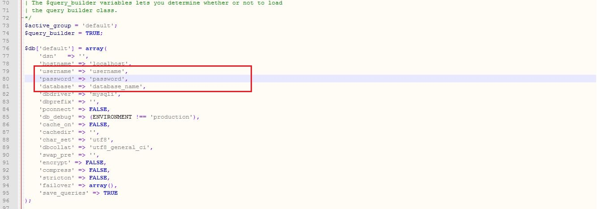
You can change your site setting in "www.domain.com/admin/general_settings/" link.
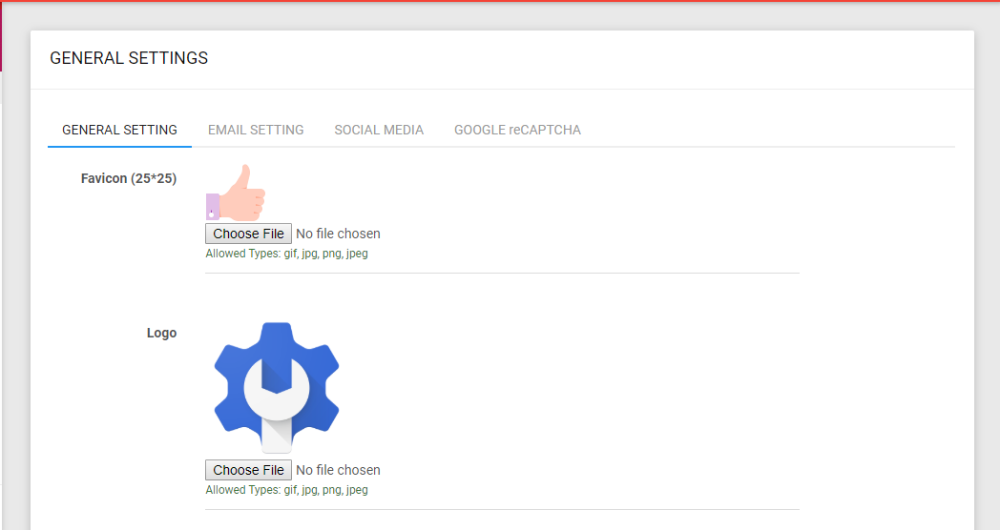
Change the SMTP Username and Password in "domain.com/admin/general_settings/" link.
Note: You need to use a valid domain email address. Email will not work on localhost.
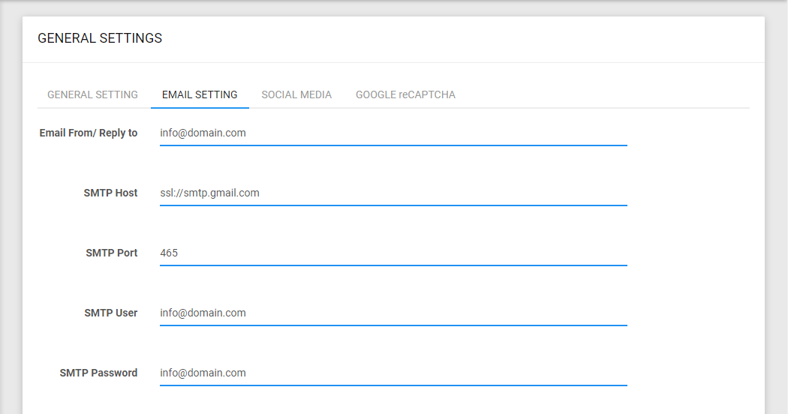
After login to admin panel click on the Setting tab in the left menu and then click on the recaptch settign. Here you can add your Site & Secrit Key
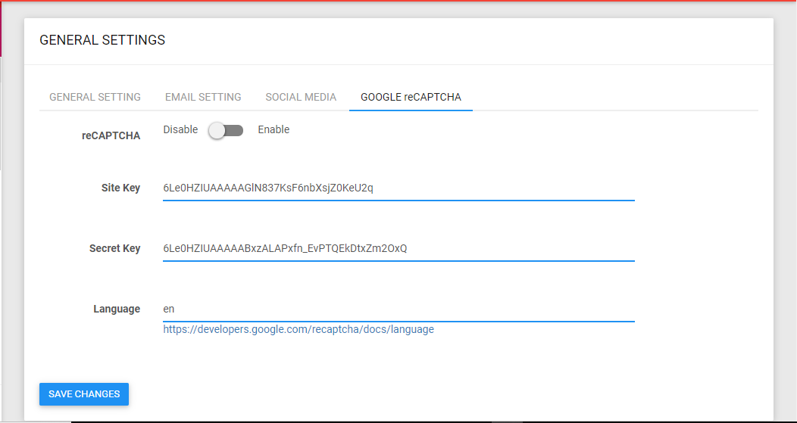
Open your site main root folder then open: application/core/MY_Controller.phpHere you can chage as per your requirements.
mPDF is a PHP library which generates PDF files from UTF-8 encoded HTML. It is based on FPDF and HTML2FPDF (see CREDITS), with a number of enhancements. mPDF was written by Ian Back and is released under the GNU GPL v2 licence.
mPDF 7.0 requires PHP ^5.6 || ~7.0.0 || ~7.1.0 || ~7.2.0. PHP mbstring and gd extensions have to be loaded.
* For more information visit this link https://github.com/phpclicks/mpdf
Go to the site folder adminlite and open file application\views\admin\include\navbar.php. Here you can set logo, naviation and Account Buttons.
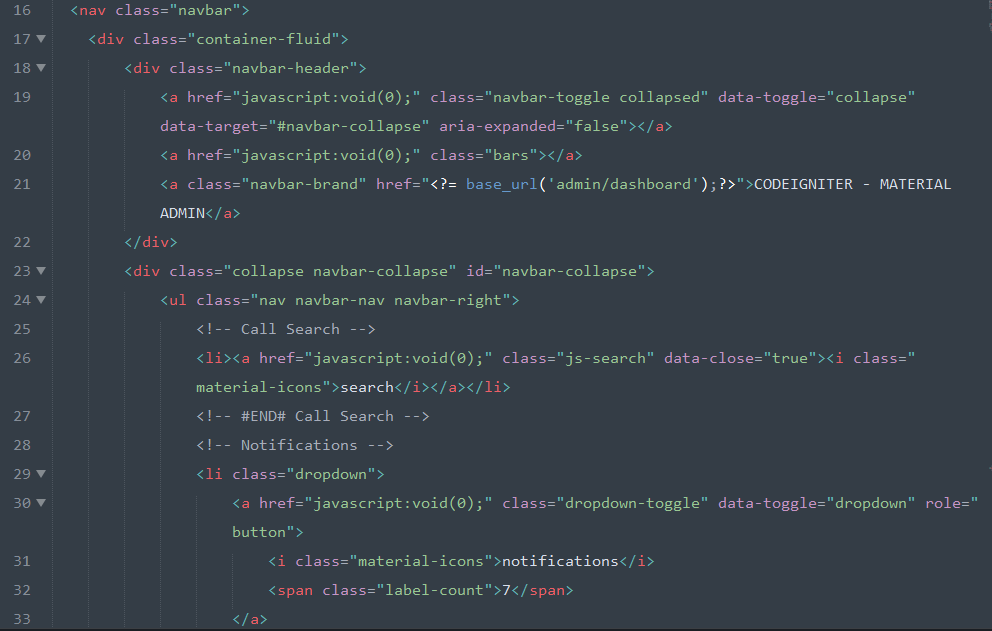
Go to the site folder adminlite and open file application\views\admin\include\sidebar.php. Here you can add/remove/edit the main-menu and dropdown-menu
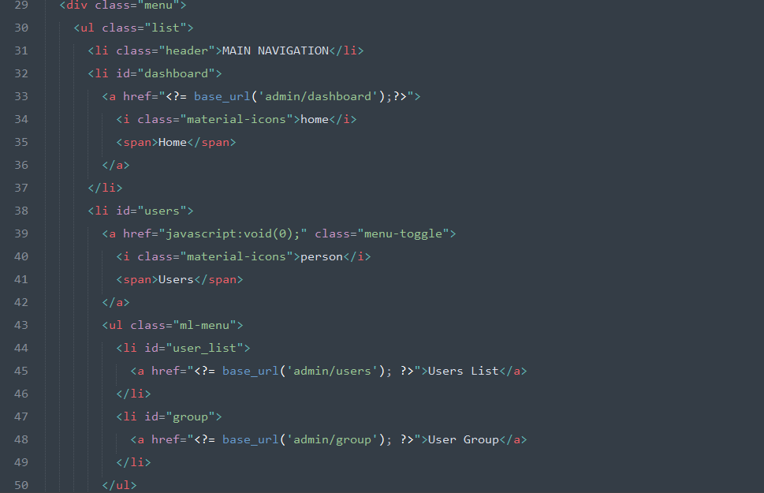
If you want to change the Route file go to adminlite/application/config/route.php here you can change the route according to your requirements
If you want to change the MY Controller file go to adminlite/application/core/MY_Controller.php and edit it according to your needs.
The administrator module having all privileges about this entire project.
1. This is the main Dashboard overview. you can see all your information about the user.
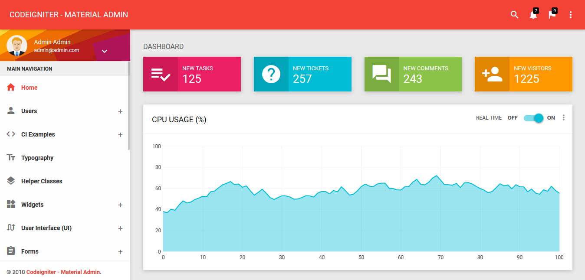
2. To see and change your user profile and you can add , edit and delete the user from this option.
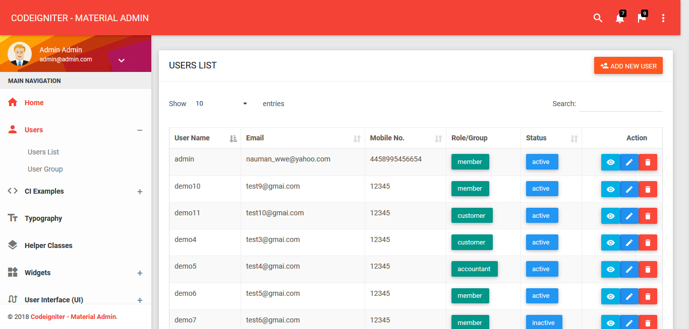
3. To see and change your group you can add, edit and delete the users group from this option.
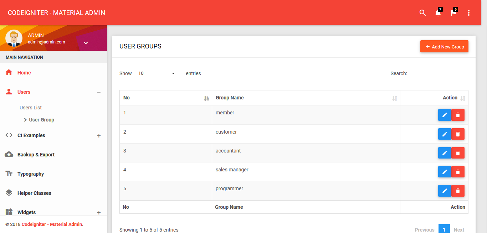
3. To see and change your admin profile and password you can update the admin profile from this option.
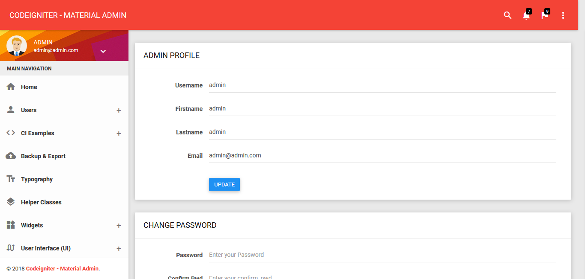
4. You can also see the codeigniter examples
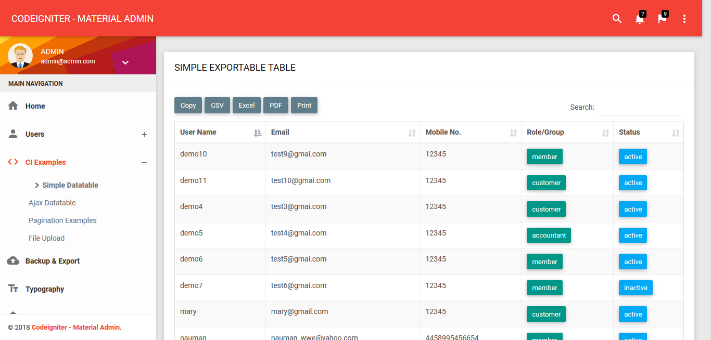
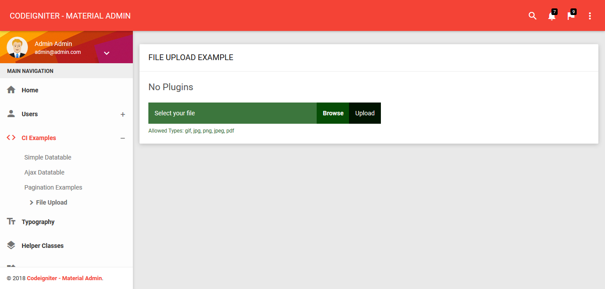
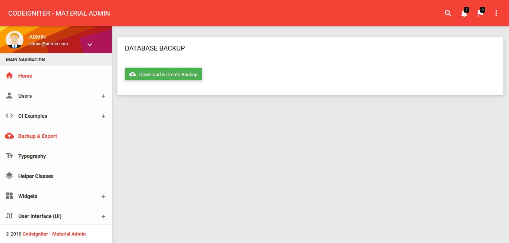
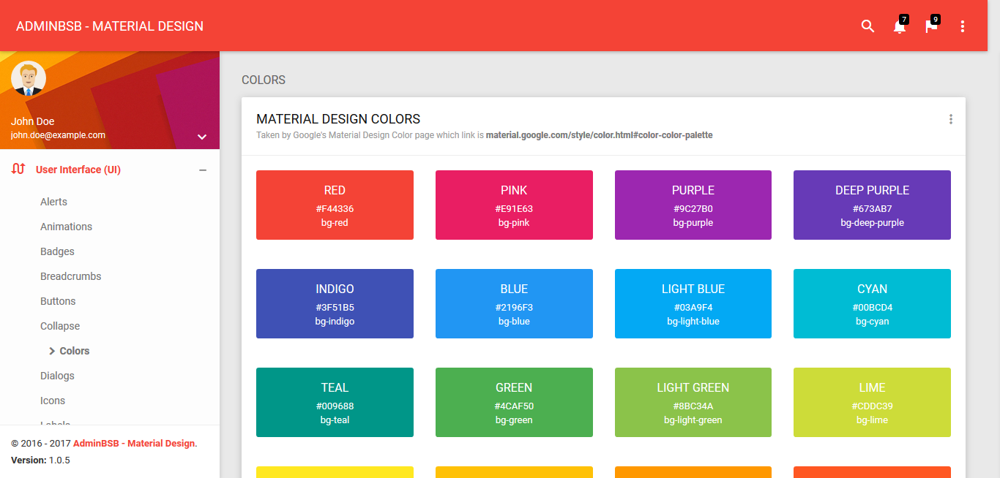
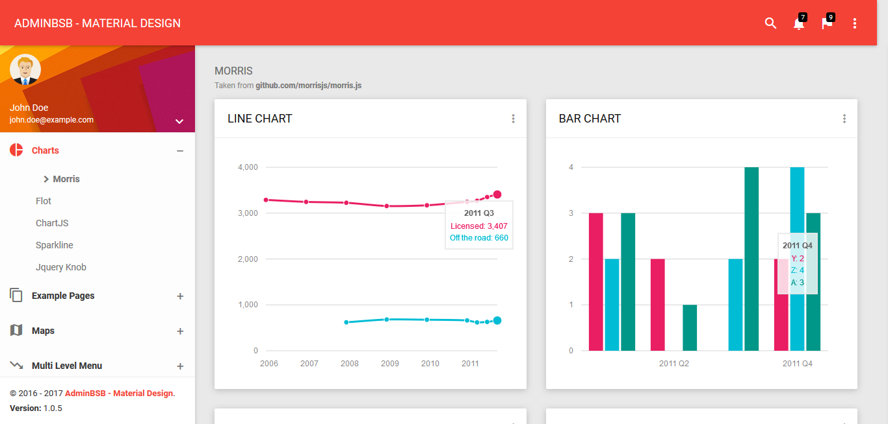
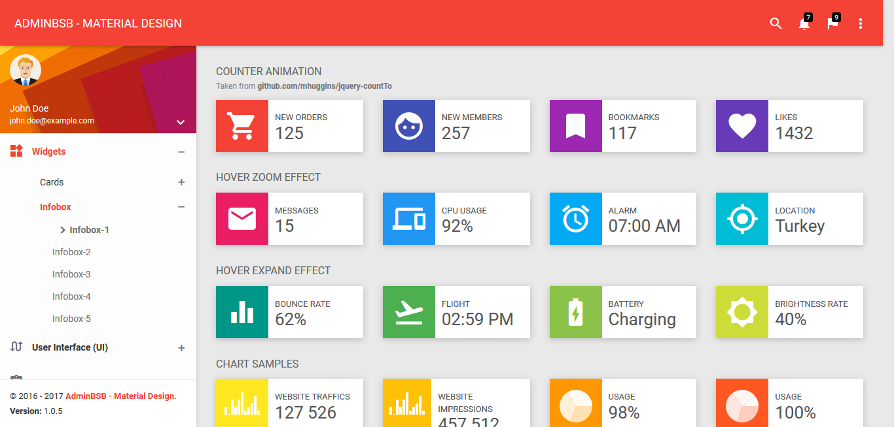
Widgets
User Interface (UI)
Forms
Tables
Medias
Charts
Version v1.4 (4 December 2019)
For any query or problem feel free to contact us on Email: codeglamour1@gmail.com